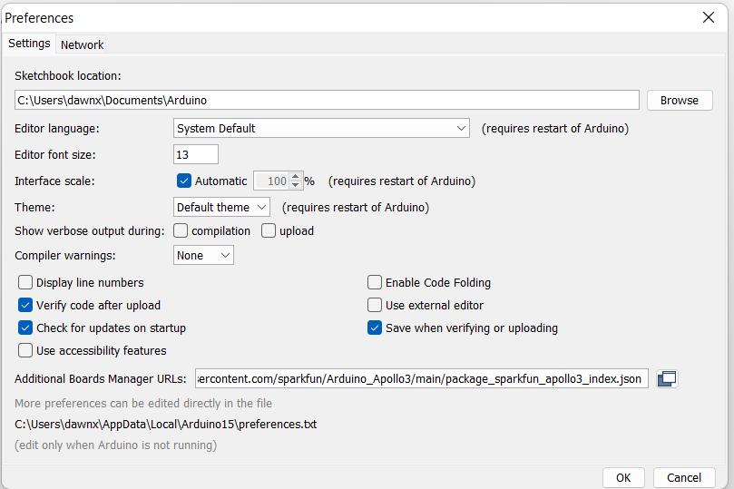

Boxin Xu
Fast Robot 2023 · ECE 5160
Hi! I am Boxin. This website is used to document Fast Robot labs(ECE 5160) offered at Cornell University.
Hi! I am Boxin. This website is used to document Fast Robot labs(ECE 5160) offered at Cornell University.
This lab get me familar with SparkFun Artemis Nano board, which is the mini controller we use for this course. It integrated LED, temperature sensor, microphone, bluetooth module and so on. In this lab, I will go through the lab manual and setup Artemis Nano board.
I already have Arduino IDE installed in my laptop, so I only need to follow setup instruction by Sparkfun to finish the Artemis setup. I installing the Arduino Core for Apollo3 as figure shown below.
I changed baud to 115200, to keep board and Arduino IDE compatible with each other.
This part is simply follow setup instruction and run example code, which is included in the library, to blink the Artemis build in LED. LED lights up successful.
By uploading sample Arduino serial schetch, I make sure the board have success connection via serial communication.
I upload the analog read example from Arduino library to read the temperature change when I put my finger on the sensor. Temperature changed slowly. But when I put my finger on sensor the reading goes up. And when my finger leave sensor, temperature drop slowly.
I upload the microphone output example from Arduino library to read the maximum frequency the board read. When I speak or whistl, the maximum frequency increased as shown in the figure.

In this part, the Artemis board need to detect a musical A sound and light up LED. Turn of LED if board does not detect a musical A. I set if maximum frequency go beyond a threshold, digital write the LED to HIGH; otherwise digital write the LED to LOW.
This lab get me familar with SparkFun Artemis Nano board, which is the mini controller we use for this course. It integrated LED, temperature sensor, microphone, bluetooth module and so on. In this lab, I will go through the lab manual and setup Artemis Nano board.